🔬 國中化學黑板教室：溶解度與飽和濃度
國中化學核心單元：最大溶解極限與降溫結晶計算
💥 學生最大盲區：【溶解度】絕對不是【溶解量】！

👉 溶解度 (Solubility)： 是這杯水的「極限比例（上限）」！通常以
g / 100g 水 表示。代表在定溫下，每 100g 的水最多能吃下多少克的溶質。👉 溶解量 (Dissolved Amount)： 是這杯水肚子裡「實際溶解了多少公克 (g)」！
🚨 核心鐵則： 水量不同，能消化的「溶解量」就不同！如果只有 50g 的水，飽和時的「溶解量」會減半；但這杯水的「溶解度」依然不變！
☕ 互動黑板實驗：定溫 20°C 下，100g 水的糖溶解度為 36g / 100g 水
請點擊下方加入不同重量的糖，觀察「極限比例」與「實際公克數」的清晰差異：

🟢 未飽和時：實際溶解量 ＜ 最大極限
當你在 100g 水中只加 15g 糖時，因為還沒達到 36g 的上限，所以糖全部溶解！
👉 此時「實際溶解量 ＝ 15g」，但這杯水的「溶解度依然是 36g / 100g 水」！極限上限不會因為你加得少而改變！
🔴 達到飽和時：溶解量 ＝ 當前水量的極限
當你在 100g 水中倒進 50g 糖時，最多只能溶解 36g；多出的 14g 仍是未溶砂糖，留在杯底！
👉 此時「實際溶解量 ＝ 36g」，絕不是 50g！而「溶解度」依然維持 36g / 100g 水。杯底未溶的 14g 不能算入溶解量！
⚖️ 為什麼總被搞混？【溶解度】vs. 【飽和濃度】名詞大辨析！
因為當我們要算「飽和濃度」時，分子一定會帶入「最大極限的溶解度數值」！
🚨 但是兩者的定義和分母根本不一樣：
👉 溶解度： 分母「永遠只是水 (純溶劑 100g)」！表示為
36g / 100g 水。👉 飽和濃度： 分母「必須是：水 ＋ 溶質 (整杯溶液總重)」！表示為百分比
wt%！
問題
在 20°C 時，將 36g 糖溶於 100g 水中剛好達到飽和。請問這杯糖水的「溶解度」和「重量百分濃度」分別是多少？如果水量減半成 50g，溶解度會改變嗎？
提示
1. 溶解度分母是「純水」，濃度分母是「全體溶液」。
2. 溶解度是一種「極限比例標示」，就像最高速限一樣，不會因為車子（水量）變少而改變。
解答
1. 溶解度：36g / 100g 水。
2. 濃度：36 ÷ (36+100) × 100% ＝ 26.5%（不是36%！）。
3. 水量減半：最多溶解 18g 糖，但溶解度「不變」（仍維持 36g / 100g 水）！
📈 溫度對溶解度的影響：固體曲線 vs. 氣體曲線
👉 大部分固體 (如硝酸鉀)： 溫度愈高，水分子運動愈劇烈，溶解度大幅上升！
👉 少數固體 (如食鹽)： 溫度變化對溶解度的影響極小（曲線幾乎是水平線）。
👉 極少數固體與「所有氣體」 (如氫氧化鈣、CO₂)： 溫度愈高，反而溶解度下降（熱水藏不住氣體！）。
📊 互動黑板溶解度曲線圖：拖曳溫度，觀察三者最大極限！
請拖曳溫度滑桿，對照 100g 水在不同溫度下，三種固體最多能吃下幾克：
❄️ 段考魔王題破解：熱水降溫，【結晶析出】計算機！
因為像硝酸鉀這種物質，在高溫時胃口超大（能溶很多），一旦降溫變冷，水的胃口瞬間變小！原本融化在肚子裡的溶質「超過了低溫時的極限」，多出來的部分只好重新變成固體晶體沉澱在杯底！
🧮 互動結晶實驗室：硝酸鉀溶液降溫模擬
已知硝酸鉀在 60°C 時溶解度為 110g；而在 20°C 時溶解度降為 30g (每100g水)。
請拖曳題目給的「實際純水量」，觀察降溫到 20°C 時會吐出多少橘紅色晶體：
✔ 結論：水量如果變成 2 倍 (200g)，吐出來的晶體自然也會變成 2 倍！看比例最快！
🍾 氣體的溶解度：為什麼汽水打開會狂冒泡？
1️⃣ 溫度愈高，溶解度愈「低」： 熱水煮沸時，水裡的溶氧跟氣體都會被趕出來冒氣泡！
2️⃣ 壓力愈大，溶解度愈「高」： 氣體就像彈簧，壓力越大越能把它們硬壓進水分子裡！
🍾 汽水開瓶的化學解密
👉 開瓶前（高壓）： 工廠利用高壓把大量二氧化碳壓入糖水中，此時瓶內壓力大，二氧化碳溶解度極高，看不到氣泡。
👉 開瓶後（減壓）： 「啵」的一聲，外界壓力變小（降回一大氣壓），二氧化碳溶解度瞬間暴跌！水裡再也藏不住那麼多氣體，只好化為無數氣泡狂湧而出！
🤿 潛水夫病的致命危機
👉 深海潛水（高壓）： 深海水壓極大，呼吸空氣中的「氮氣」會大量溶解在高壓的血液中。
👉 浮上水面太快（瞬間減壓）： 如果潛水員急速上浮，水壓驟減，血液中的氮氣溶解度暴降！氮氣在血管裡像汽水開瓶一樣直接化為氣泡，堵塞血管、劇痛甚至致命！
問題
如果工廠想要製造出氣泡感超強、溶有最多二氧化碳的超級汽水，應該在什麼環境（溫度與壓力）下灌裝？
提示
氣體分子像彈簧，且很怕熱。想想看怎麼把它們「壓」進水裡，又讓它們「不想跑出來」？
解答
低溫 ＋ 高壓 環境！
低溫讓氣體安分不想跑，高壓把它們強力壓緊水裡，這就是汽水灌裝的黃金守則！